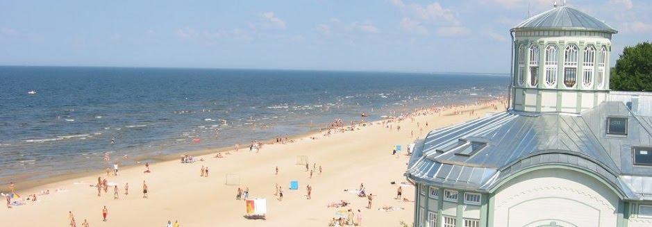

Jūrmala
Jūrmala ir Latvijas valstspilsēta un lielākā kūrortpilsēta,apmēram 25 kilometrus uz rietumiem no Rīgas.
Pilsētas platība ir 100 km2.
Jūrmala 24 km garumā stiepjas gar Rīgas līci un Lielupi.
2020. gadā bija 49 687 iedzīvotāji.

atpakaļ